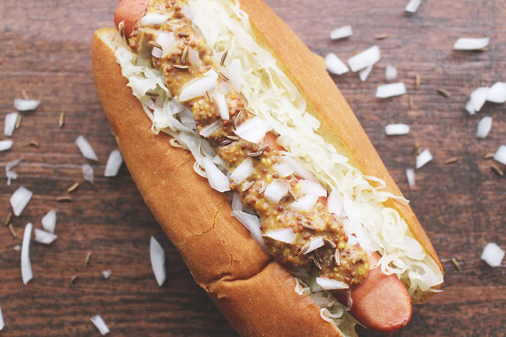

German-Style Hot Dog

German-style Hot Dog with Sauerkraut and Sauteed Potatoes
This recipe takes 35 - 40 minutes to prepare and feeds 2 people.
Ingredients
- Dijon mustard (18g)
- Brioche style hot dog buns (2pcs)
- Chives (5g)
- Cider vinegar (30ml)
- Garlic clove (1pcs)
- Mayonnaise (50ml)
- Pork sausage (2pcs)
- Red onion (1pcs)
- Shredded cabbage (150g)
- White potato (3pcs)
- Yellow mustard seeds (1tsp)
Steps
- Preheat the oven to 220°c/ 200°c (Fan) and boil a kettle.
- Peel and finely slice your red onion.
- Peel and finely chop your garlic.
- Chop your chives finely.
- Heat a pot with a drizzle of vegetable oil over a medium heat. Once hot, add you yellow mustard seeds and cook for 30 secs or until sizzling.
- Once sizzling, add the sliced red onion and your shredded red cabbage and cook for 4-5 min or until beginning to soften.
- Meanwhile, peel your potatoes and chop them into small, bite-sized pieces.
- Add the chopped potatoes to a separate pot with plenty of boiled water and a pinch of salt and bring to the boil over a high heat.
- Once boiling, reduce the heat to medium-high and cook for 10-12 min or until fork-tender.
- Once done, drain and return to the pot to steam dry.
- Once the onion and cabbage have softened, add half your cider vinegar (you'll use the rest later!) to the pot, cook for a further 30 secs then set aside to cool.
- Combine your mayonnaise and Dijon mustard in a separate bowl - this is your mustard mayo.
- Add your pork sausages to one side of a baking tray (use tin foil to avoid mess!) and put the tray in the oven for 15-20 min.
- Heat a large wide-based pan (preferably non-stick) with a drizzle of vegetable oil over a high heat.
- Once hot, add the drained potatoes with a pinch of salt and cook for 5-6 min, stirring occasionally, or until golden and crisp.
- Once golden, add the chopped garlic and cook for a further 30 secs or until fragrant - these are your sauteed potatoes.
- Add the remaining cider vinegar to the cooled cabbage with a grind of black pepper and half of the chopped chives (save the rest for garnish!) and give everything a good mix up. This is your sauerkraut.
- Cut a slit into the top of each hot dog bun.
- Remove the tray with the sausages from the oven.
- Add the cut hot dog buns to the other side of the tray, then return the tray to the oven for 2-3 min or until warmed through.
- Fill each warmed hot dog bun with some mustard mayo, a sausage and some sauerkraut.
- Serve the sauteed potatoes to the side with the remaining sauerkraut and remaining mustard mayo.
- Garnish with the remaining chives and enjoy!